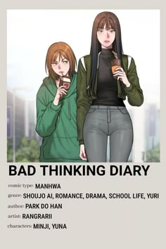

Los personajes que “no son del todo chicos” suelen representar la fluidez de la identidad. Algunos ejemplos incluyen protagonistas que cambian de género, personajes andróginos o seres fantásticos que simbolizan la transformación.
| Arquetipo | Ejemplo | Significado |
|---|---|---|
| Andrógino | Personajes de estética ambigua | Rompen estereotipos |
| Transformación física | Ranma ½ | Humor y reflexión |
| Identidad oculta | Princess Knight | Lucha por aceptación |
| Diversidad moderna | Hourou Musuko | Realismo social |
